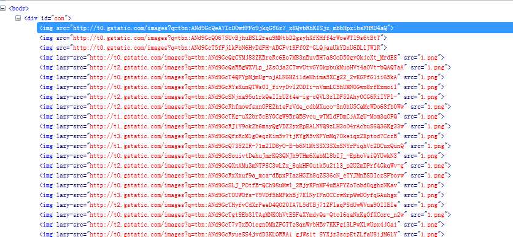
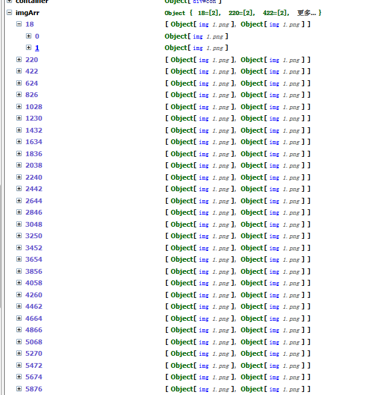

前言
图片延迟加载技术其实应该被用得很多了，令人汗颜的是我居然之前一直没有用过，今天还是一个后端的大哥给提出来的，于是我便趁着中午休息的时间做了一下研究，这里提出来和大家讨论一下。
PS：小生初学，各位有问题可以提出来讨论
延迟加载原理
延迟加载有多种实现，我选择了其中一种：
为img标签src设置统一的图片链接，而将真实链接地址装在自定义属性中。
所以开始时候图片是不会加载的，我们将满足条件的图片的src重置为自定义属性便可实现延迟加载功能
当然还有其它的方案，里面我还比较青睐的就是将dom结构装入textare，满足条件时候将之载入，这里我便不讨论了。
来看看我们用到的共用图片：

问题
其实这种方案不能说没有问题，因为我会遍历所有的img标签，相当于把整个页面走了一次，万一我有1000张图片，我想效率会是很大的问题！
PS：页面上出现1000张图片这种事情我是不会让其发生的，就算真的出现，也会有对应的解决之法，这里不扯远了，于是我们开始今天的准备工作。
给我100张图片
既然要做延迟加载，当然需要图片了，所以给我100张图片吧！！！
咳咳，其实我是一个程序员，所以我不会一张一张的搞的，下面是我的处理步骤：
① 在google图片里面搜索图片
② 将主要节点给拷贝出来
③ 在后面改写代码，将所有的img搞出来并装入我们的节点
④ 批量操作节点
反正最后就成了这个样子啦：

我们轻松加愉快的获得了100张图片（具体有没有100张我没有数。。。）
功能实现
代码很简单，我这里就直接给贴出来了，我们一起来看看吧：
function imgLazyLoad(container) { container = container || $(window); //需要时jquery对象 var imgArr = {}; initImg(); lazyLoad(); container.scroll(function () { lazyLoad(); }); $(window).resize(function () { initImg(); }); function initImg() { $('img').each(function () { var el = $(this); if (el.attr('lazy-src') && el.attr('lazy-src') != '') { var offset = el.offset(); if (!imgArr[offset.top]) { imgArr[offset.top] = []; } imgArr[offset.top].push(el); } }); } function lazyLoad() { var height = container.height(); var srollHeight = container.scrollTop(); for (var k in imgArr) { if (parseInt(k) < srollHeight + height) { var _imgs = imgArr[k]; for (var i = 0, len = _imgs.length; i < len; i++) { var tmpImg = _imgs[i]; if (tmpImg.attr('lazy-src') && tmpImg.attr('lazy-src') != '') { tmpImg.attr('src', tmpImg.attr('lazy-src')); tmpImg.removeAttr('lazy-src'); } } delete imgArr[k]; } } } //lazyLoad } imgLazyLoad($('#con'));
① 我们首先会给函数传入一个容器，不传的话默认就是window
② 然后我这里会初始化整个img，事实上就是遍历了，我会把同时处于某一个的高度的图片给他搞出来放到一起：

③ 当我们初始化结束后，我这里便定义了一个延迟加载的函数，他会取得当前的视图高度与滚动条高度，然后遍历我们的对象，将高度在他之上的图片给显示出来（这一步很关键哦）
当元素图片一旦加载的话便移除对象并且移除元素的lazy-src属性，因为当我们窗口大小发生变化后，我们会重新计算图片位置，计算中加载的元素不具备lazy-src属性便忽略了。
以上我们的功能便结束了，我以为好像就这样结束了，于是就结束了。。。。。。真的结束了吗？
狗屁延迟加载
请思考以下场景，叶小钗现在正在看苍老师的漫画呢，叶小钗有好几期没看了呢，于是叶小钗猥琐的打开了多个窗口慢慢等待图片加载！自己就高高兴兴玩起游戏来。
半个小时后，叶小钗打开网页一看，恩不错所有网页图片都加载出来了呢！！
但是往下一番，尼玛怎么下面的图片没有出来！！！我的苍老师呢？换了几个网页都是这样，所以叶小钗是否憎恨延迟加载！！！！
PS：以上场景只是笑话，不可能发生的，但是却是我们需要考虑到的问题。
当页面比较空闲的情况下，我们为什么要延迟加载呢？所以我们需要将以上代码做一点改变，我是这样想的：
若是页面长时间没有鼠标移动的话，我这里就继续加载剩下图片了，一旦鼠标运动，我这里就暂停一下
直接上代码吧：
1 function imgLazyLoad(container) { 2 3 var imgLazyLoadTimer = null; 4 var resetImglazy = null; 5 6 container = container || $(window); //需要时jquery对象 7 var imgArr = {}; 8 initImg(); 9 lazyLoad(); 10 autoLoad(); 11 container.scroll(function () { 12 lazyLoad(); 13 }); 14 $(window).resize(function () { 15 initImg(); 16 }); 17 $(document).mousemove(function () { 18 clearTimeout(imgLazyLoadTimer); 19 if (resetImglazy) clearTimeout(resetImglazy); 20 resetImglazy = setTimeout(function () { 21 autoLoad(); 22 }, 5000); 23 }); 24 function initImg() { 25 $('img').each(function () { 26 var el = $(this); 27 if (el.attr('lazy-src') && el.attr('lazy-src') != '') { 28 var offset = el.offset(); 29 if (!imgArr[offset.top]) { 30 imgArr[offset.top] = []; 31 } 32 imgArr[offset.top].push(el); 33 } 34 }); 35 } 36 37 function lazyLoad() { 38 var height = container.height(); 39 var srollHeight = container.scrollTop(); 40 for (var k in imgArr) { 41 if (parseInt(k) < srollHeight + height) { 42 var _imgs = imgArr[k]; 43 for (var i = 0, len = _imgs.length; i < len; i++) { 44 var tmpImg = _imgs[i]; 45 if (tmpImg.attr('lazy-src') && tmpImg.attr('lazy-src') != '') { 46 tmpImg.attr('src', tmpImg.attr('lazy-src')); 47 tmpImg.removeAttr('lazy-src'); 48 } 49 } 50 delete imgArr[k]; 51 } 52 } 53 } //lazyLoad 54 55 function autoLoad() { 56 var _key = null; 57 for (var k in imgArr) { 58 if (!_key) { 59 _key = k; 60 break; 61 } 62 } if(!_key) return false;
63 var _imgs = imgArr[_key]; 64 for (var i = 0, len = _imgs.length; i < len; i++) { 65 var tmpImg = _imgs[i]; 66 if (tmpImg.attr('lazy-src') && tmpImg.attr('lazy-src') != '') { 67 tmpImg.attr('src', tmpImg.attr('lazy-src')); 68 tmpImg.removeAttr('lazy-src'); 69 } 70 } 71 delete imgArr[_key]; 72 if (imgLazyLoadTimer) { 73 clearTimeout(imgLazyLoadTimer); 74 } 75 imgLazyLoadTimer = setTimeout(autoLoad, 1000); 76 } 77 } //imgLazyLoad 78 imgLazyLoad($('#con'));
具体我还没怎么测试呢，各位看看吧，有问题请提出来哦
昨天有朋友提出有问题，我解决了下下面上新代码：


function imgLazyLoad(container) { var imgLazyLoadTimer = null; var resetImglazy = null; container = container || $(window); //需要时jquery对象 var imgArr = {}; initImg(); lazyLoad(); imgLazyLoadTimer = setTimeout(autoLoad, 5000); container.scroll(function () { lazyLoad(); }); $(window).resize(function () { initImg(); }); $(document).mousemove(function () { if (imgLazyLoadTimer) clearTimeout(imgLazyLoadTimer); if (resetImglazy) clearTimeout(resetImglazy); resetImglazy = setTimeout(function () { autoLoad(); }, 5000); }); function initImg() { $('img').each(function () { var el = $(this); if (el.attr('lazy-src') && el.attr('lazy-src') != '') { var offset = el.offset(); if (!imgArr[offset.top]) { imgArr[offset.top] = []; } imgArr[offset.top].push(el); } }); } function lazyLoad() { var height = container.height(); var srollHeight = container.scrollTop(); for (var k in imgArr) { if (parseInt(k) < srollHeight + height) { var _imgs = imgArr[k]; for (var i = 0, len = _imgs.length; i < len; i++) { var tmpImg = _imgs[i]; if (tmpImg.attr('lazy-src') && tmpImg.attr('lazy-src') != '') { tmpImg.attr('src', tmpImg.attr('lazy-src')); tmpImg.removeAttr('lazy-src'); } } delete imgArr[k]; } } } //lazyLoad function autoLoad() { var _key = null; for (var k in imgArr) { if (!_key) { _key = k; break; } } if (!_key) return false; var _imgs = imgArr[_key]; for (var i = 0, len = _imgs.length; i < len; i++) { var tmpImg = _imgs[i]; if (tmpImg.attr('lazy-src') && tmpImg.attr('lazy-src') != '') { tmpImg.attr('src', tmpImg.attr('lazy-src')); tmpImg.removeAttr('lazy-src'); } } delete imgArr[_key]; if (imgLazyLoadTimer) { clearTimeout(imgLazyLoadTimer); } imgLazyLoadTimer = setTimeout(autoLoad, 1000); } } //imgLazyLoad imgLazyLoad($('#con'));
演示地址
{kind=link}
结语
中午不睡下午崩溃，我这里感觉去睡一会，若是您觉得这篇文章不错请点一下推荐，若是您发现有何问题请一定提出来！
哎，没有功劳也有苦劳，没有苦劳我有疲劳哦，各位看在中午没睡的情况下，顶下吧。。。。：）
不足与交流
呵呵，根据这个功能居然会有朋友关注，并提出了宝贵的意见，真的十分感谢，以下是朋友的见解：
通过阅读原作中的代码，可以看到，在上述几个步骤中存在如下几个问题：
- 用户指定的图片容器其实没有用；
- 自动扫描全部被延迟加载的图片信息(按照作者的意图其实应该是仅扫描指定容器内的图片)，另外，图片扫描的代码可以写的更简练；
- 加载当前屏幕图片时，计算某图片是否在当前窗口的算法不够严谨，仅当容器的高度小于当前浏览器窗口高度时算法有效，其他情况下均无效；
- 另外，我认为这里判断lazy-src是否为空几乎没有必要，因为实际应用中几乎不可能出现，更可能出现的是地址错误，但是这种错误根本没法去检测出现；
针对上述四点问题，我只重点说一下第三点。
我们不妨做一个假设，假设所有的图片不是在做着假设的id为con的div中，而是直接在body中，那么根据原来的算法，在计算某图片是否属于当前屏幕时，结果总是为true，此时延迟加载算法几乎完全失效了！
为什么呢？看看原作的代码，如果图片的容器是body，即整个document，那么代码var height = container.height();得到的高度值就是整个页面的高度，这个高度超过所有图片的offset().top的高度，因此导致的结果就是，所有的图片都被认为是在当前屏幕而被一次性加载，这跟不使用延迟加载有什么不同呢？
修改后的代码：
//延迟加载图片
var imageloadCurrentWindower =function(container){
//在空闲时循环加载剩余图片工作的定时器
var autoLoaderTimer =null;
//在空闲时启动加载剩余图片工作的定时器
var restartAutoLoaderTimer =null;
//图片容器
this.container = container || $(document);//容器默认为整个文档
//所有图片
this.allImages;
//初始化延迟加载的图片的信息
this.scanLazyImageInfo =function(){
allImages ={};
this.container.find('img[lazy-src]').each(function(){
var el = $(this);
var offset = el.offset();
if(!allImages[offset.top]){
allImages[offset.top]=[];
}
allImages[offset.top].push(el);
});
}
//加载当前屏幕中被延迟加载的图片
this.loadCurrentWindow =function(){
var h1,h2;
h1 =this.container.height();
h2 = $(window).height();
var height =this.container.scrollTop()+(h1 > h2 ? h2 : h1);
for(var k in allImages){
if(parseInt(k)< height){
loadImages(allImages, k);
continue;
}
break;
}
}
//页面空闲时自动加载未加载的图片
this.autoLoad =function(){
// 取一行图片加载
for(var k in allImages){
loadImages(allImages, k);
break;
}
//取消上一个定时器
if(autoLoaderTimer){
clearTimeout(autoLoaderTimer);
}
//重新生成定时器，1秒后如果页面仍然空闲则加载下一行图片
autoLoaderTimer = setTimeout(autoLoad,1000);
}
//加载图片
loadImages =function(allImages, _key){
var _imgs = allImages[_key];
for(var i =0, len = _imgs.length; i < len; i++){
var tmpImg = _imgs[i];
tmpImg.attr('src', tmpImg.attr('lazy-src'));
tmpImg.removeAttr('lazy-src');
}
delete allImages[_key];
}
//扫描所有被延迟加载的图片信息
this.scanLazyImageInfo();
//加载当前窗口中的图片
this.loadCurrentWindow();
//监视当前容器的滚动条滚动事件
this.container.scroll(function(){
loadCurrentWindow();
});
//监视窗口的尺寸改变事件
$(window).resize(function(){
scanLazyImageInfo();
loadCurrentWindow();
});
//监视页面是否空闲,以鼠标是否移动为标志
$(document).mousemove(function(){
//清除空闲时自动加载图片的定时器
clearTimeout(autoLoaderTimer);
//如果存在清除重启空闲时自动加载图片的定时器
if(restartAutoLoaderTimer)
clearTimeout(restartAutoLoaderTimer);
//重新生成重启空闲时自动加载图片的定时器
restartAutoLoaderTimer = setTimeout(function(){
autoLoad();
},5000);
});
//启动自动加载当前屏幕外图片
this.autoLoad();
}
//页面下载完成后即刻开始延迟加载图片工作
$(document).ready(function(){
//启动延迟加载,支持$(document)
imageloadCurrentWindower($("#con"));
});